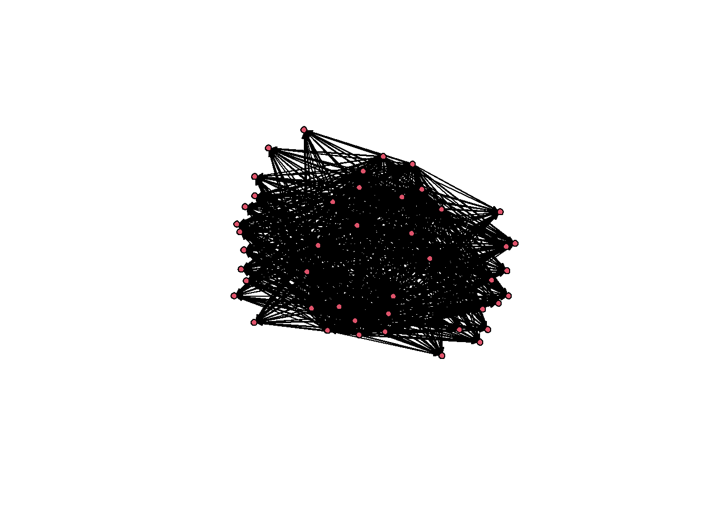
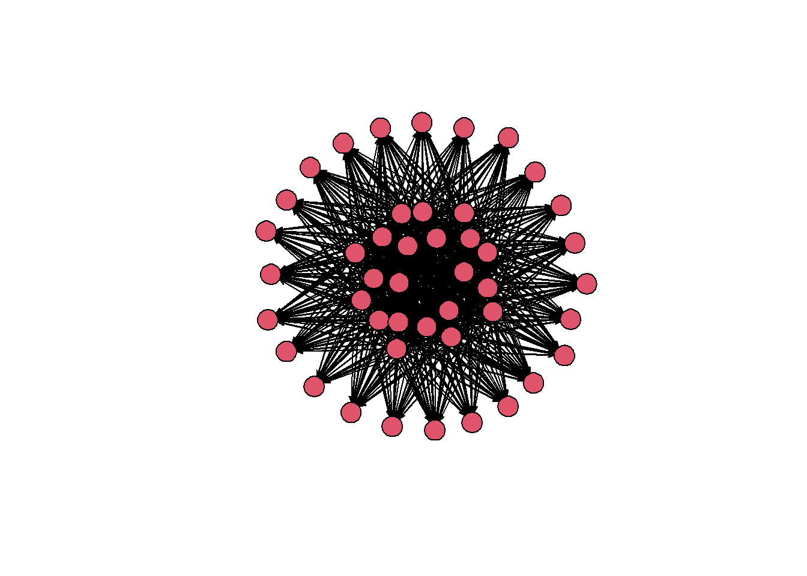
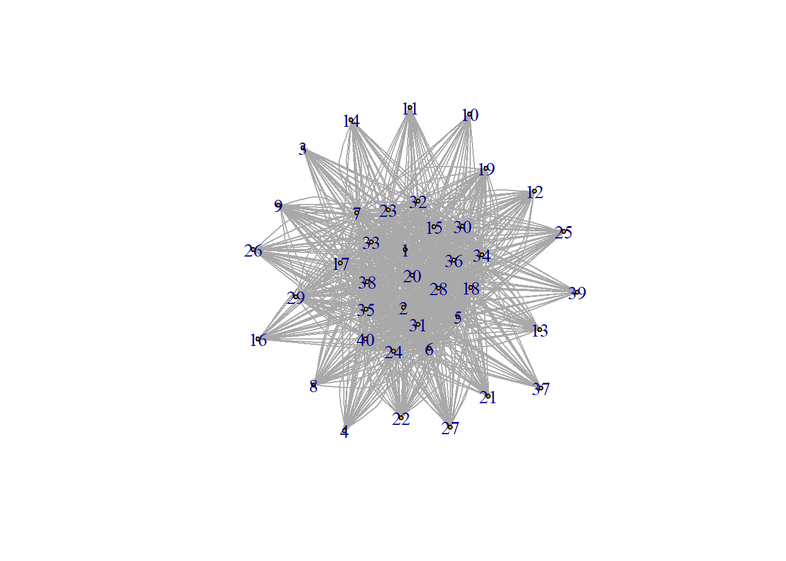
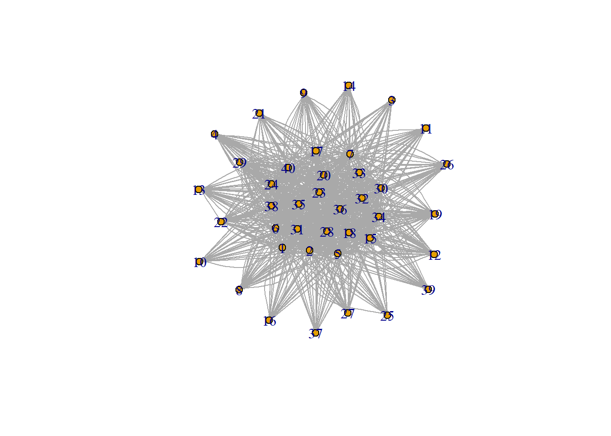
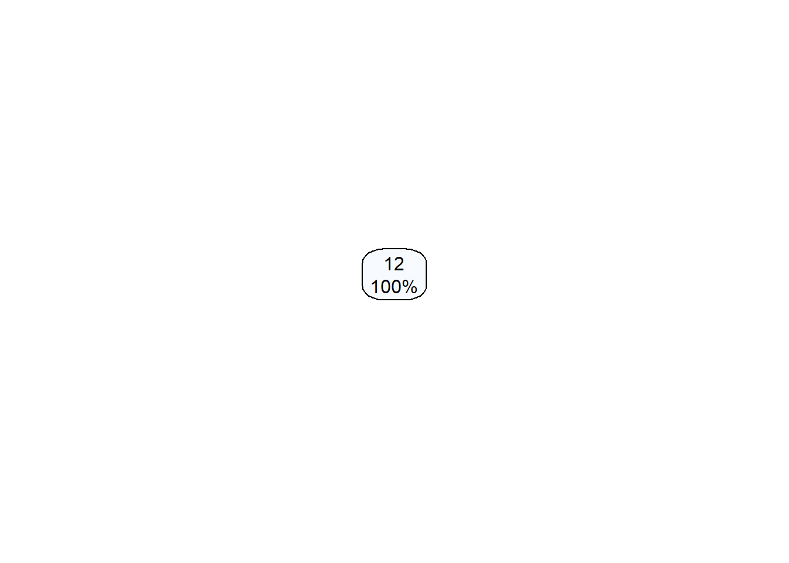
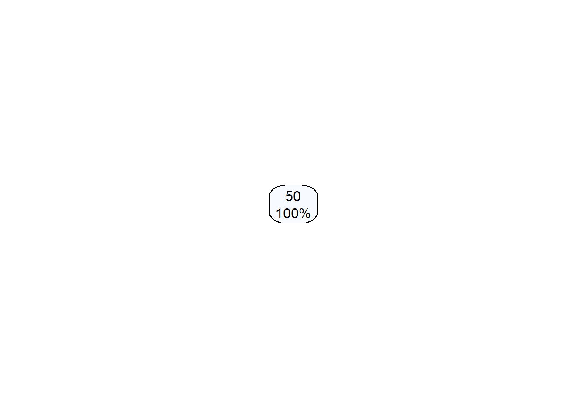

# Load packages and an xls file
library(readxl)
library(network)## Warning: package 'network' was built under R version 4.0.5## network: Classes for Relational Data
## Version 1.16.1 created on 2020-10-06.
## copyright (c) 2005, Carter T. Butts, University of California-Irvine
## Mark S. Handcock, University of California -- Los Angeles
## David R. Hunter, Penn State University
## Martina Morris, University of Washington
## Skye Bender-deMoll, University of Washington
## For citation information, type citation("network").
## Type help("network-package") to get started.library(igraph) ## Warning: package 'igraph' was built under R version 4.0.5##
## Attaching package: 'igraph'## The following objects are masked from 'package:network':
##
## %c%, %s%, add.edges, add.vertices, delete.edges, delete.vertices,
## get.edge.attribute, get.edges, get.vertex.attribute, is.bipartite,
## is.directed, list.edge.attributes, list.vertex.attributes,
## set.edge.attribute, set.vertex.attribute## The following objects are masked from 'package:stats':
##
## decompose, spectrum## The following object is masked from 'package:base':
##
## unionlibrary(tidyverse)## Warning: package 'tidyverse' was built under R version 4.0.5## -- Attaching packages --------------------------------------- tidyverse 1.3.1 --## v ggplot2 3.3.3 v purrr 0.3.4
## v tibble 3.1.1 v dplyr 1.0.5
## v tidyr 1.1.3 v stringr 1.4.0
## v readr 1.4.0 v forcats 0.5.1## Warning: package 'ggplot2' was built under R version 4.0.4## Warning: package 'tibble' was built under R version 4.0.5## Warning: package 'tidyr' was built under R version 4.0.5## Warning: package 'readr' was built under R version 4.0.5## Warning: package 'dplyr' was built under R version 4.0.5## Warning: package 'forcats' was built under R version 4.0.5## -- Conflicts ------------------------------------------ tidyverse_conflicts() --
## x dplyr::as_data_frame() masks tibble::as_data_frame(), igraph::as_data_frame()
## x purrr::compose() masks igraph::compose()
## x tidyr::crossing() masks igraph::crossing()
## x dplyr::filter() masks stats::filter()
## x dplyr::groups() masks igraph::groups()
## x dplyr::lag() masks stats::lag()
## x purrr::simplify() masks igraph::simplify()hw10<- read_excel("hw10.xlsx")
node<- read_excel("hw10.xlsx", skip = 1)
colnames(node) <- c("ID", 1:40, "trait") #create the edge list
edge_prep <- node %>% pivot_longer(col = -c(ID, trait), names_to = "in-tie", values_to = "value") %>%
rename (`out-tie` = ID)
edgelist <- separate_rows(edge_prep, value, sep =",") %>% select(!trait) %>%
rename (`tie-type` = value)
as.character(edgelist$`tie-type`)## [1] NA NA NA NA NA NA NA "4" NA "4" "1" NA NA NA NA NA NA "1"
## [19] "2" "3" "4" "5" NA "1" "3" "4" "5" "4" NA NA NA NA NA NA NA "4"
## [37] NA NA NA NA "1" "2" "3" "4" "5" NA "1" "3" "4" "5" NA NA NA NA
## [55] NA NA NA NA NA NA NA NA NA NA NA NA NA NA NA NA NA NA
## [73] NA NA NA NA NA NA NA NA NA NA NA NA NA NA NA NA NA "2"
## [91] "1" NA "1" NA NA NA NA "1" "2" "3" "4" "5" NA "1" "3" "4" "5" NA
## [109] NA "1" "5" NA NA NA NA NA NA NA NA NA NA NA NA "1" "3" "4"
## [127] "5" NA "1" "2" "3" "4" "5" NA NA NA NA NA NA NA NA NA NA NA
## [145] NA NA NA NA "1" "2" "3" "4" "5" NA "1" "2" "3" "4" NA NA NA "1"
## [163] "2" "3" "4" "5" NA NA NA NA NA "1" "3" "4" NA NA NA NA NA "1"
## [181] "2" "3" "4" "1" "2" "3" "4" NA NA NA NA NA NA "2" "2" "3" "1" "2"
## [199] "3" "4" "5" NA NA "1" "2" "3" "4" "5" NA NA "1" "2" "3" "1" "2" "3"
## [217] "4" "5" NA NA NA NA NA NA NA NA NA NA NA NA NA NA NA NA
## [235] "3" NA NA "3" NA NA NA NA NA NA NA NA NA NA NA NA "3" NA
## [253] NA NA "3" NA NA NA NA NA NA NA NA "1" "2" "1" NA NA "2" NA
## [271] "4" NA NA NA NA "1" NA "1" "1" NA "1" "2" "1" NA "4" NA NA NA
## [289] NA NA NA "2" "1" "3" "4" NA "2" NA NA NA "2" NA NA NA NA NA
## [307] "1" "2" "3" "5" "2" "3" "4" NA NA "1" "2" "3" "4" "5" "1" "2" "3" "4"
## [325] "5" "4" "4" NA "4" NA "1" "3" "4" NA NA "1" "2" "3" "4" "5" "3" NA
## [343] "1" "2" "3" "4" "5" "1" "2" "3" "4" "5" "3" "4" "1" "3" "4" "5" "2" "3"
## [361] NA NA NA "1" "2" "3" "4" "1" "2" "3" "4" "5" "1" "3" "4" NA "1" "2"
## [379] "3" "4" "5" "1" "3" "4" "5" "1" "3" "4" "5" "2" "2" "3" "4" NA NA NA
## [397] NA NA NA NA NA NA NA NA "4" NA "4" NA "1" NA NA "1" "3" NA
## [415] NA NA NA NA "4" NA NA NA NA NA NA "1" "4" "5" "4" NA NA NA
## [433] "1" "4" "5" NA "5" "4" NA NA NA NA "5" NA NA NA NA NA NA "4"
## [451] NA NA NA "1" "3" "4" "5" NA NA NA NA NA "1" "2" "3" "4" "5" NA
## [469] NA "4" "1" "5" "1" "3" "4" "5" NA NA NA NA "1" "2" "3" "4" "5" "3"
## [487] "4" NA NA "1" "2" "3" "4" "5" "1" "3" "4" "5" "4" "5" NA NA NA NA
## [505] NA NA NA NA NA NA "1" "2" "3" "4" "5" "1" "2" "3" "4" "5" NA "2"
## [523] "3" "4" NA NA NA NA NA NA NA NA NA "1" "2" "3" "4" "5" "1" "2"
## [541] "3" NA "2" "5" NA NA NA NA "5" "1" "2" "3" "4" "5" "1" "2" "3" "4"
## [559] "5" "1" "2" "3" "4" "5" NA "1" "2" "3" "4" "5" NA NA "2" "3" NA "2"
## [577] "3" "4" "5" NA NA NA NA "1" "2" "3" "2" NA NA NA "2" NA "2" "4"
## [595] "2" "2" "4" NA NA "1" "2" "4" NA "2" "1" "2" "2" NA "2" "2" "4" "2"
## [613] "3" "4" "2" NA NA "1" "2" "4" NA NA "1" "2" "3" "4" "1" "2" "3" "4"
## [631] NA "2" "2" "2" "2" "2" "2" "4" "2" NA NA NA NA "1" "2" "3" "4" NA
## [649] NA "1" "2" "3" "4" "5" "1" "2" "3" "4" "5" NA "4" "1" "4" "5" "4" NA
## [667] NA NA NA NA NA NA "2" "2" NA "4" "4" "5" "2" NA NA NA "2" "2"
## [685] "4" NA "1" "2" "3" "4" "5" "4" NA NA NA NA NA "1" "2" "3" "4" "5"
## [703] NA NA "4" "5" NA "1" NA NA "5" NA "1" "4" "1" "4" "5" "4" "1" "4"
## [721] "5" NA "1" "4" "5" NA NA NA NA "1" "3" "4" "5" "4" "5" NA "1" "2"
## [739] "3" "4" "1" "3" "4" "5" NA NA NA "4" "5" NA "1" "4" "5" "1" "3" "4"
## [757] "1" "3" "4" "5" NA NA NA "1" "3" "4" "5" "1" "1" "3" "4" "5" NA NA
## [775] NA NA NA "1" "2" "3" "4" "5" NA NA "1" "2" "3" "4" "5" "2" "3" NA
## [793] "4" NA NA "1" "1" "3" "4" "5" NA NA "3" "4" NA NA "1" NA "1" "2"
## [811] "3" "4" "5" NA "1" "3" NA NA NA NA NA "1" "2" "3" "4" "5" NA "1"
## [829] "2" "3" "4" "5" "2" "3" NA NA "1" "2" "3" "4" "5" "2" "1" "2" "3" "4"
## [847] "5" NA NA NA NA NA NA NA "1" "2" "3" "4" "5" NA "1" "2" "3" "4"
## [865] "5" NA NA NA NA NA NA NA NA NA NA NA "2" "4" "5" NA NA NA
## [883] "1" "2" "3" "4" "5" NA NA NA NA NA "4" "5" "1" "4" "5" NA NA NA
## [901] NA NA NA NA NA NA NA "1" "2" "3" "4" "5" NA "3" "4" NA NA NA
## [919] NA NA "4" NA "4" NA "1" "3" "1" "3" NA NA NA NA "1" "3" "4" "5"
## [937] NA "1" "3" "4" "5" "4" NA NA NA NA NA "1" "3" NA "4" "1" "3" "4"
## [955] "5" NA NA NA "1" "3" "4" "5" NA NA NA NA NA NA NA "2" "4" "2"
## [973] "4" "5" NA NA "4" NA NA "1" "2" "4" "5" NA NA NA NA "1" "2" "3"
## [991] "4" "5" NA NA NA NA "1" "2" "4" "5" NA NA NA NA NA NA "1" "2"
## [1009] "4" "5" NA "4" "5" "2" "4" "5" NA NA NA NA NA NA NA NA NA NA
## [1027] NA NA NA NA NA NA NA NA NA NA NA NA NA NA NA NA NA NA
## [1045] NA NA NA NA NA NA NA NA NA NA NA NA NA NA NA NA NA NA
## [1063] NA NA NA NA NA NA "1" "2" "3" "4" NA NA "1" "2" "3" "4" "5" "1"
## [1081] "2" "3" "4" "5" NA "1" "2" "3" "4" NA "4" NA NA "3" "4" "5" NA NA
## [1099] NA NA "2" "3" "2" NA "4" "1" "3" "2" "3" NA NA NA "2" "1" "2" "1"
## [1117] "3" "4" NA "1" "2" "3" "4" NA NA NA "1" "2" "3" "4" "5" NA NA "1"
## [1135] "3" "4" "5" NA NA NA "2" "3" "1" NA "1" "2" "3" "4" "5" "2" NA "4"
## [1153] "1" NA "1" NA NA NA "1" NA NA "1" "2" "3" "4" "5" "1" "2" "3" "4"
## [1171] "5" "1" "3" "4" "5" NA NA NA NA NA NA NA "2" "4" "1" "2" "3" "4"
## [1189] "5" NA NA NA NA NA "1" "3" "4" "5" NA NA NA NA "5" "1" "3" "4"
## [1207] NA NA "1" "3" "4" NA NA "4" NA "4" NA NA NA NA NA NA NA NA
## [1225] NA "3" "4" "5" "2" "4" NA NA NA NA NA NA "4" "3" "4" NA "3" "4"
## [1243] "5" "3" "3" NA "1" "3" "4" "5" NA NA NA NA NA NA "1" "2" "3" "4"
## [1261] "5" NA NA "1" "2" "3" "4" "5" NA NA "1" "2" "4" NA NA NA NA NA
## [1279] NA NA NA NA "2" "2" NA "4" "1" "3" "4" "5" "2" "1" "5" NA NA "2"
## [1297] "1" "2" "4" NA "1" "2" "3" "4" "5" NA NA "2" "1" "2" "3" "4" "5" NA
## [1315] NA NA NA "1" "4" "5"edgelist$`tie-type`[is.na(edgelist$`tie-type`)] = 0 #NA values for tie-type to 0
edgelist <- na.omit(edgelist)
edgelist <- edgelist %>%
arrange(`out-tie`) %>%
filter(`out-tie` != `in-tie`)
#there are 3 variables in the edge list: out-tie, in-tie, and tie.
#creating nodelist
inclass <- subset(node, select = -c(2:41) )
inclass <- na.omit(inclass)
absent_people <- tibble (ID= c(3,4,8,9,10,11,12,13,14,16,19,21,22,25,26,27,29,37,39), trait = NA) #people who didnt take the survey
nodelist <-rbind (inclass, absent_people) %>% arrange(`ID`) #combine people took the survey and people didn't take the surveyLooking at the information centrality, tie type 4 (I ask for advice/help) has the greatest centralization while tie type 5 (Asks me for help/advice). Betweenness is also another measure of centrality which shows us how well-connected the parts are. In terms of betweenness, tie type 3 (Is my friend ) ranks the highest and tie type 2 (I have met during my time in MBDS) is the lowest. Likewise, tie type 3 also ranks the highest for reciprocity, though tie type 4 ranks the lowest. As for closeness, tie type 2 ranks the closest and tie type 3 is the least closest.
Tie type 1 (I have texted in the last 7 days) generates the most similar network in terms of introversion, while tie type 3 generates the most dissimilar.
classnormsnet <- network(edgelist, vertex.attr = nodelist, matrix.type = "edgelist", ignore.eval = FALSE)
summary(classnormsnet)## Network attributes:
## vertices = 45
## directed = TRUE
## hyper = FALSE
## loops = FALSE
## multiple = FALSE
## bipartite = FALSE
## total edges = 1246
## missing edges = 0
## non-missing edges = 1246
## density = 0.6292929
##
## Vertex attributes:
##
## ID:
## numeric valued attribute
## attribute summary:
## Min. 1st Qu. Median Mean 3rd Qu. Max.
## 1.00 7.00 18.00 18.56 29.00 40.00
##
## trait:
## numeric valued attribute
## attribute summary:
## Min. 1st Qu. Median Mean 3rd Qu. Max. NA's
## 1.000 2.000 2.000 2.042 2.000 3.000 21
## vertex.names:
## character valued attribute
## 45 valid vertex names
##
## Edge attributes:
##
## tie-type:
## character valued attribute
## attribute summary:
## 0 1 2 3 4 5
## 551 143 133 131 176 112
##
## Network adjacency matrix:
## 1 2 5 6 7 1 10 11 12 13 14 15 16 17 18 19 2 20 21 22 23 24 25 26 27 28
## 1 0 0 0 0 0 0 1 1 1 1 1 1 1 1 1 1 1 1 1 1 1 1 1 1 1 1
## 2 0 0 0 0 0 1 1 1 1 1 1 1 1 1 1 1 0 1 1 1 1 1 1 1 1 1
## 5 0 0 0 0 0 1 1 1 1 1 1 1 1 1 1 1 1 1 1 1 1 1 1 1 1 1
## 6 0 0 0 0 0 1 1 1 1 1 1 1 1 1 1 1 1 1 1 1 1 1 1 1 1 1
## 7 0 0 0 0 0 1 1 1 1 1 1 1 1 1 1 1 1 1 1 1 1 1 1 1 1 1
## 1 0 0 0 0 0 0 0 0 0 0 0 0 0 0 0 0 0 0 0 0 0 0 0 0 0 0
## 10 0 0 0 0 0 0 0 0 0 0 0 0 0 0 0 0 0 0 0 0 0 0 0 0 0 0
## 11 0 0 0 0 0 0 0 0 0 0 0 0 0 0 0 0 0 0 0 0 0 0 0 0 0 0
## 12 0 0 0 0 0 0 0 0 0 0 0 0 0 0 0 0 0 0 0 0 0 0 0 0 0 0
## 13 0 0 0 0 0 0 0 0 0 0 0 0 0 0 0 0 0 0 0 0 0 0 0 0 0 0
## 14 0 0 0 0 0 0 0 0 0 0 0 0 0 0 0 0 0 0 0 0 0 0 0 0 0 0
## 15 0 0 0 0 0 1 1 1 1 1 1 0 1 1 1 1 1 1 1 1 1 1 1 1 1 1
## 16 0 0 0 0 0 0 0 0 0 0 0 0 0 0 0 0 0 0 0 0 0 0 0 0 0 0
## 17 0 0 0 0 0 1 1 1 1 1 1 1 1 0 1 1 1 1 1 1 1 1 1 1 1 1
## 18 0 0 0 0 0 1 1 1 1 1 1 1 1 1 0 1 1 1 1 1 1 1 1 1 1 1
## 19 0 0 0 0 0 0 0 0 0 0 0 0 0 0 0 0 0 0 0 0 0 0 0 0 0 0
## 2 0 0 0 0 0 0 0 0 0 0 0 0 0 0 0 0 0 0 0 0 0 0 0 0 0 0
## 20 0 0 0 0 0 1 1 1 1 1 1 1 1 1 1 1 1 0 1 1 1 1 1 1 1 1
## 21 0 0 0 0 0 0 0 0 0 0 0 0 0 0 0 0 0 0 0 0 0 0 0 0 0 0
## 22 0 0 0 0 0 0 0 0 0 0 0 0 0 0 0 0 0 0 0 0 0 0 0 0 0 0
## 23 0 0 0 0 0 1 1 1 1 1 1 1 1 1 1 1 1 1 1 1 0 1 1 1 1 1
## 24 0 0 0 0 0 1 1 1 1 1 1 1 1 1 1 1 1 1 1 1 1 0 1 1 1 1
## 25 0 0 0 0 0 0 0 0 0 0 0 0 0 0 0 0 0 0 0 0 0 0 0 0 0 0
## 26 0 0 0 0 0 0 0 0 0 0 0 0 0 0 0 0 0 0 0 0 0 0 0 0 0 0
## 27 0 0 0 0 0 0 0 0 0 0 0 0 0 0 0 0 0 0 0 0 0 0 0 0 0 0
## 28 0 0 0 0 0 1 1 1 1 1 1 1 1 1 1 1 1 1 1 1 1 1 1 1 1 0
## 29 0 0 0 0 0 0 0 0 0 0 0 0 0 0 0 0 0 0 0 0 0 0 0 0 0 0
## 3 0 0 0 0 0 0 0 0 0 0 0 0 0 0 0 0 0 0 0 0 0 0 0 0 0 0
## 30 0 0 0 0 0 1 1 1 1 1 1 1 1 1 1 1 1 1 1 1 1 1 1 1 1 1
## 31 0 0 0 0 0 1 1 1 1 1 1 1 1 1 1 1 1 1 1 1 1 1 1 1 1 1
## 32 0 0 0 0 0 1 1 1 1 1 1 1 1 1 1 1 1 1 1 1 1 1 1 1 1 1
## 33 0 0 0 0 0 1 1 1 1 1 1 1 1 1 1 1 1 1 1 1 1 1 1 1 1 1
## 34 0 0 0 0 0 1 1 1 1 1 1 1 1 1 1 1 1 1 1 1 1 1 1 1 1 1
## 35 0 0 0 0 0 1 1 1 1 1 1 1 1 1 1 1 1 1 1 1 1 1 1 1 1 1
## 36 0 0 0 0 0 1 1 1 1 1 1 1 1 1 1 1 1 1 1 1 1 1 1 1 1 1
## 37 0 0 0 0 0 0 0 0 0 0 0 0 0 0 0 0 0 0 0 0 0 0 0 0 0 0
## 38 0 0 0 0 0 1 1 1 1 1 1 1 1 1 1 1 1 1 1 1 1 1 1 1 1 1
## 39 0 0 0 0 0 0 0 0 0 0 0 0 0 0 0 0 0 0 0 0 0 0 0 0 0 0
## 4 0 0 0 0 0 0 0 0 0 0 0 0 0 0 0 0 0 0 0 0 0 0 0 0 0 0
## 40 0 0 0 0 0 1 1 1 1 1 1 1 1 1 1 1 1 1 1 1 1 1 1 1 1 1
## 5 0 0 0 0 0 0 0 0 0 0 0 0 0 0 0 0 0 0 0 0 0 0 0 0 0 0
## 6 0 0 0 0 0 0 0 0 0 0 0 0 0 0 0 0 0 0 0 0 0 0 0 0 0 0
## 7 0 0 0 0 0 0 0 0 0 0 0 0 0 0 0 0 0 0 0 0 0 0 0 0 0 0
## 8 0 0 0 0 0 0 0 0 0 0 0 0 0 0 0 0 0 0 0 0 0 0 0 0 0 0
## 9 0 0 0 0 0 0 0 0 0 0 0 0 0 0 0 0 0 0 0 0 0 0 0 0 0 0
## 29 3 30 31 32 33 34 35 36 37 38 39 4 40 5 6 7 8 9
## 1 1 1 1 1 1 1 1 1 1 1 1 1 1 1 1 1 1 1 1
## 2 1 1 1 1 1 1 1 1 1 1 1 1 1 1 1 1 1 1 1
## 5 1 1 1 1 1 1 1 1 1 1 1 1 1 1 0 1 1 1 1
## 6 1 1 1 1 1 1 1 1 1 1 1 1 1 1 1 0 1 1 1
## 7 1 1 1 1 1 1 1 1 1 1 1 1 1 1 1 1 0 1 1
## 1 0 0 0 0 0 0 0 0 0 0 0 0 0 0 0 0 0 0 0
## 10 0 0 0 0 0 0 0 0 0 0 0 0 0 0 0 0 0 0 0
## 11 0 0 0 0 0 0 0 0 0 0 0 0 0 0 0 0 0 0 0
## 12 0 0 0 0 0 0 0 0 0 0 0 0 0 0 0 0 0 0 0
## 13 0 0 0 0 0 0 0 0 0 0 0 0 0 0 0 0 0 0 0
## 14 0 0 0 0 0 0 0 0 0 0 0 0 0 0 0 0 0 0 0
## 15 1 1 1 1 1 1 1 1 1 1 1 1 1 1 1 1 1 1 1
## 16 0 0 0 0 0 0 0 0 0 0 0 0 0 0 0 0 0 0 0
## 17 1 1 1 1 1 1 1 1 1 1 1 1 1 1 1 1 1 1 1
## 18 1 1 1 1 1 1 1 1 1 1 1 1 1 1 1 1 1 1 1
## 19 0 0 0 0 0 0 0 0 0 0 0 0 0 0 0 0 0 0 0
## 2 0 0 0 0 0 0 0 0 0 0 0 0 0 0 0 0 0 0 0
## 20 1 1 1 1 1 1 1 1 1 1 1 1 1 1 1 1 1 1 1
## 21 0 0 0 0 0 0 0 0 0 0 0 0 0 0 0 0 0 0 0
## 22 0 0 0 0 0 0 0 0 0 0 0 0 0 0 0 0 0 0 0
## 23 1 1 1 1 1 1 1 1 1 1 1 1 1 1 1 1 1 1 1
## 24 1 1 1 1 1 1 1 1 1 1 1 1 1 1 1 1 1 1 1
## 25 0 0 0 0 0 0 0 0 0 0 0 0 0 0 0 0 0 0 0
## 26 0 0 0 0 0 0 0 0 0 0 0 0 0 0 0 0 0 0 0
## 27 0 0 0 0 0 0 0 0 0 0 0 0 0 0 0 0 0 0 0
## 28 1 1 1 1 1 1 1 1 1 1 1 1 1 1 1 1 1 1 1
## 29 0 0 0 0 0 0 0 0 0 0 0 0 0 0 0 0 0 0 0
## 3 0 0 0 0 0 0 0 0 0 0 0 0 0 0 0 0 0 0 0
## 30 1 1 0 1 1 1 1 1 1 1 1 1 1 1 1 1 1 1 1
## 31 1 1 1 0 1 1 1 1 1 1 1 1 1 1 1 1 1 1 1
## 32 1 1 1 1 0 1 1 1 1 1 1 1 1 1 1 1 1 1 1
## 33 1 1 1 1 1 0 1 1 1 1 1 1 1 1 1 1 1 1 1
## 34 1 1 1 1 1 1 0 1 1 1 1 1 1 1 1 1 1 1 1
## 35 1 1 1 1 1 1 1 0 1 1 1 1 1 1 1 1 1 1 1
## 36 1 1 1 1 1 1 1 1 0 1 1 1 1 1 1 1 1 1 1
## 37 0 0 0 0 0 0 0 0 0 0 0 0 0 0 0 0 0 0 0
## 38 1 1 1 1 1 1 1 1 1 1 0 1 1 1 1 1 1 1 1
## 39 0 0 0 0 0 0 0 0 0 0 0 0 0 0 0 0 0 0 0
## 4 0 0 0 0 0 0 0 0 0 0 0 0 0 0 0 0 0 0 0
## 40 1 1 1 1 1 1 1 1 1 1 1 1 1 0 1 1 1 1 1
## 5 0 0 0 0 0 0 0 0 0 0 0 0 0 0 0 0 0 0 0
## 6 0 0 0 0 0 0 0 0 0 0 0 0 0 0 0 0 0 0 0
## 7 0 0 0 0 0 0 0 0 0 0 0 0 0 0 0 0 0 0 0
## 8 0 0 0 0 0 0 0 0 0 0 0 0 0 0 0 0 0 0 0
## 9 0 0 0 0 0 0 0 0 0 0 0 0 0 0 0 0 0 0 0plot(classnormsnet, vertex.cex = 1) # very dense 
plot(classnormsnet, vertex.cex = 3)
# graphing the network
network_class <- graph_from_data_frame(d = edgelist, vertices = nodelist, directed = TRUE)
plot(network_class, edge.arrow.size = 0.1, vertex.size = 3)
plot(network_class, edge.arrow.size = 0.1, vertex.size = 6)
Edgelist based on Tie-Type, Nodelist based on trait
# edgelist based on tie-type, nodelist based on trait
edgelist1 <- edgelist %>% filter(`tie-type` == 1)
edgelist2 <- edgelist %>% filter(`tie-type` == 2)
edgelist3 <- edgelist %>% filter(`tie-type` == 3)
edgelist4 <- edgelist %>% filter(`tie-type` == 4)
edgelist5 <- edgelist %>% filter(`tie-type` == 5)
nodelist_introvert <- nodelist %>% filter(trait==1)
nodelist_extrovert <- nodelist %>% filter(trait == 3)
network_class_tietype1 <- graph_from_data_frame(d = edgelist1, vertices = nodelist, directed = TRUE)
network_class_tietype2 <- graph_from_data_frame(d = edgelist2, vertices = nodelist, directed = TRUE)
network_class_tietype3 <- graph_from_data_frame(d = edgelist3, vertices = nodelist, directed = TRUE)
network_class_tietype4 <- graph_from_data_frame(d = edgelist4, vertices = nodelist, directed = TRUE)
network_class_tietype5 <- graph_from_data_frame(d = edgelist5, vertices = nodelist, directed = TRUE)Density Density is the number of ties relative to the number of possible ties
From greatest to least, the rank of tie types in terms of density is as follows:
# density based on tie type
edge_density(network_class_tietype1, loops = F)## [1] 0.09166667edge_density(network_class_tietype2, loops = F)## [1] 0.08525641edge_density(network_class_tietype3, loops = F)## [1] 0.08397436edge_density(network_class_tietype4, loops = F)## [1] 0.1128205edge_density(network_class_tietype5, loops = F)## [1] 0.07179487Reciprocity
From greatest to least, the rank of tie types in terms of reciprocity is as follows:
#reciprocity
reciprocity(network_class_tietype1)## [1] 0.4895105reciprocity(network_class_tietype2)## [1] 0.5112782reciprocity(network_class_tietype3)## [1] 0.5648855reciprocity(network_class_tietype4)## [1] 0.3863636reciprocity(network_class_tietype5)## [1] 0.4821429Transitivity
From greatest to least, the rank of tie types in terms of transitivty is as follows:
# transitivity
transitivity(network_class_tietype1, type="global")## [1] 0.3579088transitivity(network_class_tietype2, type="global")## [1] 0.4365427transitivity(network_class_tietype3, type="global")## [1] 0.4279835transitivity(network_class_tietype4, type="global")## [1] 0.4114404transitivity(network_class_tietype5, type="global")## [1] 0.3059034Diameter
The following tie types have a diameter of 5:
1. I have texted in the last 7 days (tie type 1) 2. I have met during my time in MBDS (tie type 2) 3. Is my friend (tie type 3)
The following tie types have a diameter of 4:
4. I ask for advice/help (tie type 4) 5. Asks me for help/advice (tie type 5)
# Diameter
diameter(network_class_tietype1, directed=F, weights=NA)## [1] 5diameter(network_class_tietype2, directed=F, weights=NA)## [1] 5diameter(network_class_tietype3, directed=F, weights=NA)## [1] 4diameter(network_class_tietype4, directed=F, weights=NA)## [1] 4diameter(network_class_tietype5, directed=F, weights=NA)## [1] 4Closeness
Closeness measures how close people are to everyone else
From closest to least close, the rank of tie types is as follows:
#calculating closeness
mean(closeness(network_class_tietype1, mode="all", weights=NA))## Warning in closeness(network_class_tietype1, mode = "all", weights = NA): At
## centrality.c:2784 :closeness centrality is not well-defined for disconnected
## graphs## [1] 0.003790316mean(closeness(network_class_tietype2, mode="all", weights=NA))## Warning in closeness(network_class_tietype2, mode = "all", weights = NA): At
## centrality.c:2784 :closeness centrality is not well-defined for disconnected
## graphs## [1] 0.004634212mean(closeness(network_class_tietype3, mode="all", weights=NA))## Warning in closeness(network_class_tietype3, mode = "all", weights = NA): At
## centrality.c:2784 :closeness centrality is not well-defined for disconnected
## graphs## [1] 0.001634019mean(closeness(network_class_tietype4, mode="all", weights=NA))## Warning in closeness(network_class_tietype4, mode = "all", weights = NA): At
## centrality.c:2784 :closeness centrality is not well-defined for disconnected
## graphs## [1] 0.003956749mean(closeness(network_class_tietype5, mode="all", weights=NA))## Warning in closeness(network_class_tietype5, mode = "all", weights = NA): At
## centrality.c:2784 :closeness centrality is not well-defined for disconnected
## graphs## [1] 0.002451302Betweenness
Betweenness is the shortest paths between nodes that go through a given node
From most betweenness to least betweenness, the rank of ties in terms of betweenness is as follows:
mean(betweenness(network_class_tietype1, directed=F, weights=NA))## [1] 21.475mean(betweenness(network_class_tietype2, directed=F, weights=NA))## [1] 21.725mean(betweenness(network_class_tietype3, directed=F, weights=NA))## [1] 10.825mean(betweenness(network_class_tietype4, directed=F, weights=NA))## [1] 16.625mean(betweenness(network_class_tietype5, directed=F, weights=NA))## [1] 16.975Degree
Degree looks at the number of ties in a network
From greatest to least, the rank of tie types in terms of degree is as follows:
1. I ask for advice/help (tie type 4) 2. I have texted in the last 7 days (tie type 1) 3. I have met during my time in MBDS (tie type 2) 4. Is my friend (tie type 3) 5. Asks me for help/advice (tie type 5)
mean(degree(network_class_tietype1, mode="all"))## [1] 7.15mean(degree(network_class_tietype2, mode="all"))## [1] 6.65mean(degree(network_class_tietype3, mode="all"))## [1] 6.55mean(degree(network_class_tietype4, mode="all"))## [1] 8.8mean(degree(network_class_tietype5, mode="all"))## [1] 5.6Centrality Degree
Information Centrality is the number of all paths between nodes that go through a given node
From greatest centralization to least centralization, the rank of tie types is as follows:
centr_degree(network_class_tietype1, mode="in", normalized=T)## $res
## [1] 2 6 3 2 8 7 0 3 5 0 4 6 4 1 4 2 0 9 6 4 1 8 1 2 1 1 3 9 7 4 5 2 3 5 5 4 1 2
## [39] 1 2
##
## $centralization
## [1] 0.1391026
##
## $theoretical_max
## [1] 1560centr_degree(network_class_tietype2, mode="in", normalized=T)## $res
## [1] 1 10 1 2 7 10 0 4 2 1 0 0 1 1 2 1 1 11 9 2 4 2 4 1 1
## [26] 2 6 10 3 2 8 2 1 7 7 4 1 1 0 1
##
## $centralization
## [1] 0.1967949
##
## $theoretical_max
## [1] 1560centr_degree(network_class_tietype3, mode="in", normalized=T)## $res
## [1] 1 9 0 2 8 8 0 2 0 0 0 6 2 1 4 1 0 9 4 6 2 7 3 1 0 0 4 6 8 4 7 4 3 6 4 6 0 2
## [39] 0 1
##
## $centralization
## [1] 0.1467949
##
## $theoretical_max
## [1] 1560centr_degree(network_class_tietype4, mode="in", normalized=T)## $res
## [1] 1 9 1 2 8 8 1 15 3 9 1 4 3 1 2 0 0 9 5 6 12 6 1 1 1
## [26] 2 2 10 16 4 6 3 3 5 4 8 0 2 0 2
##
## $centralization
## [1] 0.2974359
##
## $theoretical_max
## [1] 1560centr_degree(network_class_tietype5, mode="in", normalized=T)## $res
## [1] 4 2 1 2 7 8 0 0 4 0 1 2 2 1 1 0 0 8 4 5 1 7 1 2 0 3 1 8 3 4 6 2 3 5 5 5 0 2
## [39] 0 2
##
## $centralization
## [1] 0.1333333
##
## $theoretical_max
## [1] 1560Mean Distance
The mean distance between nodes, in order from least to greatest, is as follows:
mean_distance(network_class_tietype1, directed=T)## [1] 2.226804mean_distance(network_class_tietype2, directed=T)## [1] 2.207792mean_distance(network_class_tietype3, directed=T)## [1] 2.039301mean_distance(network_class_tietype4, directed=T)## [1] 2.1406mean_distance(network_class_tietype5, directed=T)## [1] 2.231855In terms of introversion…
Most similar network: “I have texted in the last 7 days”
Most dissimilar network: “Is my friend”
node <- nodelist
node[is.na(node)] <- -1
net <- graph_from_data_frame(d = edgelist, vertices = node, directed = TRUE)
net1 <- graph_from_data_frame(d = edgelist1, vertices = node, directed = TRUE)
net2 <- graph_from_data_frame(d = edgelist2, vertices = node, directed = TRUE)
net3 <- graph_from_data_frame(d = edgelist3, vertices = node, directed = TRUE)
net4 <- graph_from_data_frame(d = edgelist4, vertices = node, directed = TRUE)
net5 <- graph_from_data_frame(d = edgelist5, vertices = node, directed = TRUE)
#filter edgelist for all 5 tie types...then calculate this measure for 5 networks and see which is most similar / dissimialr
#Similarity
assortativity(net1, V(net1)$trait, directed=T)## [1] 0.1235727assortativity(net2, V(net2)$trait, directed=T)## [1] -0.03062123assortativity(net3, V(net3)$trait, directed=T)## [1] -0.04311202assortativity(net4, V(net4)$trait, directed=T)## [1] 0.003559696assortativity(net5, V(net5)$trait, directed=T)## [1] 0.06082053##3 Do introverts tend to be at the periphery while extraverts are in the center of the network? Motivate.
We use both decision tree and regression to examine if introverts tend to be at the periphery while extraverts are in the center of the network. The input is the trait (level of introvert/extravert) and the output is the degree/betweenness.
Both the decision tree models are unable to predict any patterns. The regression model also does not show any significances. The small sample size is our limitation. We come to conclude that trait (introvert/extravert) does not predict where introverts andextraverts are in the network.
library(rpart)
library(rpart.plot)## Warning: package 'rpart.plot' was built under R version 4.0.3library(caret)## Warning: package 'caret' was built under R version 4.0.3## Loading required package: lattice##
## Attaching package: 'caret'## The following object is masked from 'package:purrr':
##
## lift#decision tree: betweenness and trait
tree_bt <- nodelist %>% mutate (between = betweenness(network_class, directed=F, weights=NA))
model_tree_bt <- rpart(between ~ as.factor(trait), method = "anova", data = tree_bt, cp = 0.00001)
rpart.plot(model_tree_bt)
#decision tree: degree and trait
tree_dg <- nodelist %>% mutate (degree = degree(network_class, mode="in"))
model_tree_dg <- rpart(degree ~ as.factor(trait), method = "anova", data = tree_dg, cp = 0.00001)
rpart.plot(model_tree_dg)
#regression: bewteenness and trait
summary(lm(between ~ as.factor(trait), data = tree_bt))##
## Call:
## lm(formula = between ~ as.factor(trait), data = tree_bt)
##
## Residuals:
## Min 1Q Median 3Q Max
## -3.1672 -2.8235 -0.7542 1.6553 7.4106
##
## Coefficients:
## Estimate Std. Error t value Pr(>|t|)
## (Intercept) 9.5566 1.9448 4.914 0.000112 ***
## as.factor(trait)2 -1.8153 2.1304 -0.852 0.405359
## as.factor(trait)3 -0.8197 2.7504 -0.298 0.769085
## ---
## Signif. codes: 0 '***' 0.001 '**' 0.01 '*' 0.05 '.' 0.1 ' ' 1
##
## Residual standard error: 3.369 on 18 degrees of freedom
## (19 observations deleted due to missingness)
## Multiple R-squared: 0.04433, Adjusted R-squared: -0.06186
## F-statistic: 0.4175 on 2 and 18 DF, p-value: 0.6649Contributions: Kim: Q1; Ryan and Ammar: Q2; Elaina and Meghan: Q3